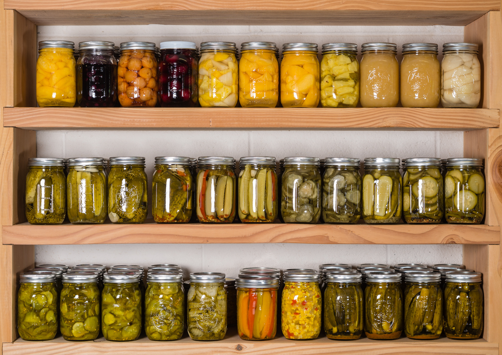
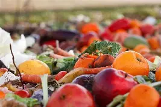
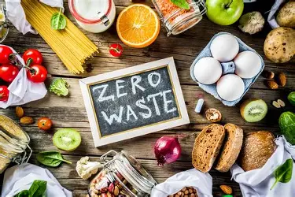
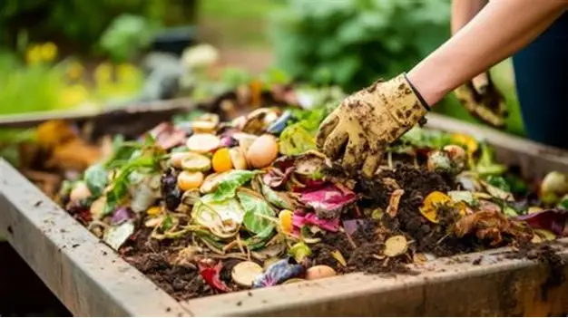

Food Conservation & Sustainability
Learn about food waste — its causes, impacts and how you can help reduce it. Discover proper storage, smart consumption, and food-label awareness to build a sustainable food culture.


What Causes Food Waste?
- Overproduction: More food is produced than needed, often leading to surplus spoilage.
- Poor Storage & Handling: Inadequate refrigeration, transport delays, or poor packaging shorten shelf life.
- Consumer Behavior: Overbuying, neglecting to check inventory, or misunderstanding expiration labels.
- Distribution & Supply Chain Losses: Food lost or wasted in transit or storage before even reaching consumers.

Food waste doesn’t only affect what’s on your plate — it impacts communities, economies, and the environment.
Environmental
Wasted food produces greenhouse gases (like methane) when decomposed, contributing to climate change.
Economic
Globally, billions worth of food are lost or wasted every year — economic loss for producers and consumers alike.
Social
Food that’s wasted could instead help feed people who lack reliable access to nutritious meals.
Adopting sustainable habits helps reduce waste and supports healthy ecosystems:
- Plan meals and shop wisely — buy only what you need.
- Increase plant-based meals to reduce resource strain.
- Support local farmers / markets to cut transport emissions.
- Avoid excessive packaging and choose reusable containers.
Labels like “Best Before,” “Use By,” or “Sell By” help consumers and retailers, but many people misunderstand what they mean. :contentReference[oaicite:0]{index=0}

Best Before
This date indicates when the product is expected to be at peak quality (taste, texture).

Use By
For perishable items — consider this date as the final safe-to-consume date (especially for meat, dairy, etc.).

Sell By
Used by stores to manage stock; not a safety or expiration date for consumers. :contentReference[oaicite:1]{index=1}
Important: Except for highly perishable items (like meat, dairy), many foods are still safe after these dates — but always check smell, texture and appearance before consuming.
Global vs Local Food Waste
In many developing countries, food waste occurs mostly during production, transport, and storage because of inadequate infrastructure — long before it reaches consumers. Meanwhile, in more urbanized or developed regions, a large portion of waste happens at the consumer or retail level due to overbuying, misunderstanding expiration labels, or improper storage. Addressing both sides — supply chain and consumer behavior — is key to reducing global food waste.
Technology & Food Preservation
- Smart refrigeration and temperature-controlled storage to prolong shelf life.
- Food-tracking apps that help monitor expiry dates and consumption before spoilage.
- Vacuum sealing, preserving, and proper packaging to reduce exposure and spoilage.
Common Myths & Facts
What You Can Do Today
- Check your food storage and dispose only when spoilage signs appear (not just by date).
- Plan weekly meals to avoid overbuying and reduce waste.
- Compost or properly dispose of organic waste.
- Share excess or near-expiry food responsibly instead of throwing away immediately.
Key Takeaways on Food Conservation
Reduce Waste
Planning meals, storing food correctly, and understanding expiration labels can significantly reduce household food waste.
Choose Sustainably
Supporting local produce and reducing overconsumption helps lower emissions and strengthens local food systems.
Take Action Today
Small actions such as composting, donating surplus food, and sharing awareness contribute to global sustainability goals.
Be Part of the SDG 12 Movement
Responsible consumption starts with informed choices. Apply what you’ve learned today and inspire others to reduce food waste.